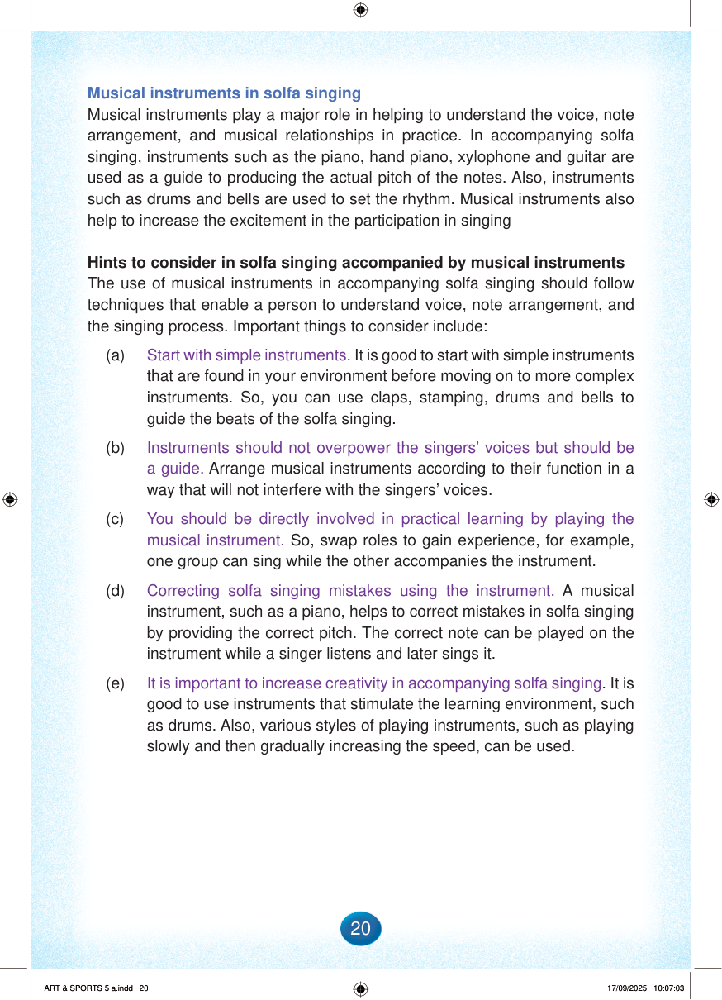

Musical instruments in solfa singing
Musical instruments play a major role in helping to understand the voice, note arrangement, and musical relationships in practice.
In accompanying solfa singing, instruments such as the piano, hand piano, xylophone and guitar are used as a guide to producing the actual pitch of the notes.
Also, instruments such as drums and bells are used to set the rhythm.
Musical instruments also help to increase the excitement in the participation in singing
Hints to consider in solfa singing accompanied by musical instruments
The use of musical instruments in accompanying solfa singing should follow techniques that enable a person to understand voice, note arrangement, and the singing process.
Important things to consider include:
(a)
Start with simple instruments.
It is good to start with simple instruments that are found in your environment before moving on to more complex instruments.
So, you can use claps, stamping, drums and bells to guide the beats of the solfa singing.
(b)
Instruments should not overpower the singers’ voices but should be a guide.
Arrange musical instruments according to their function in a way that will not interfere with the singers’ voices.
(c)
You should be directly involved in practical learning by playing the musical instrument.
So, swap roles to gain experience, for example, one group can sing while the other accompanies the instrument.
(d)
Correcting solfa singing mistakes using the instrument.
A musical instrument, such as a piano, helps to correct mistakes in solfa singing by providing the correct pitch.
The correct note can be played on the instrument while a singer listens and later sings it.
(e)
It is important to increase creativity in accompanying solfa singing.
It is good to use instruments that stimulate the learning environment, such as drums.
Also, various styles of playing instruments, such as playing slowly and then gradually increasing the speed, can be used.